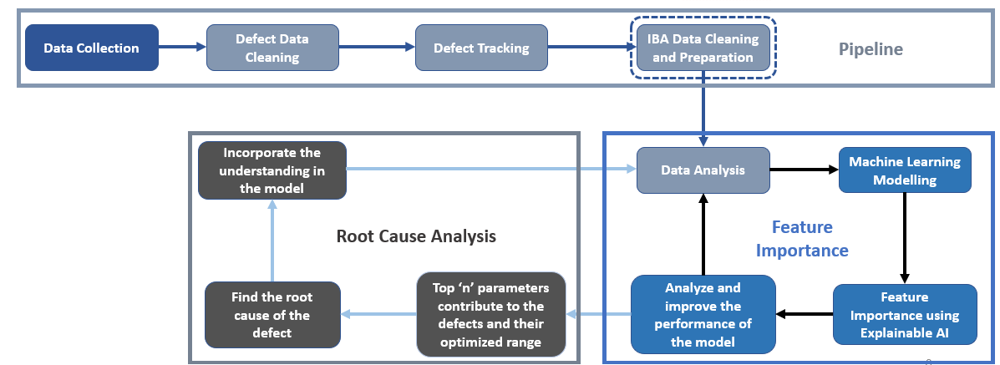

Danieli Research Center, Part of Danieli Groups
[Jun'24 - May'25]
Abstract:
This project focuses on developing a multivariate machine learning framework for predicting defective slabs dues to longitudinal cracks in thin-slab casting processes. The model integrates process-level data from mold thermocouples, tundish parameters, stopper rod positions, and mold powder characteristics to capture the thermal and flow variations associated with defect formation. By employing explainable AI techniques (LIME), the model not only achieves high predictive accuracy but also provides interpretable insights into the root causes of crack formation, enabling data-driven process optimization.
Project Details
-
The study began with extensive data collection from industrial casting operations, encompassing parameters such as mold level fluctuations, tundish temperature and composition, stopper rod movements, and thermocouple readings.
Data preprocessing involved outlier treatment with Random Forest, LOF and other process based methods. Furthermore, time-series alignment and feature engineering were also perfomed to integrate dynamic and steady-state variables influencing crack initiation.
Multiple machine learning and deep learning algorithms, including XGBoost, CATBoost, Gated Recurrent Unit (GRU) and Long Short-Term Memory (LSTM) networks were developed and optimized for classification accuracy and F1 metrics improvement.
Among these, the XGBoost model demonstrated the best trade-off between performance, inference efficiency and interpretability, achieving 94% accuracy and an AUC-ROC score of 0.82 in predicting longitudinal crack occurrence. We also achieved an F1 Score greater than 0.7 on particular test sets.
The model’s interpretability was enhanced through Local Interpretable Model-Agnostic Explanations (LIME) and SHAP values, which revealed the influence of critical process parameters on defect formation.
Key defect drivers such as cooling rate fluctuations, SEN(Submerged Entry Nozzle) Clogging, and shell-detatchment issues were identified as dominant factors through correlation and root-cause analysis. These findings were further validated against metallurgical inspection data.
The trained ML model is currently deployed at the Hoa Phat Plant, Vietnam, with a patent filing planned for FY 2026, underscoring the project’s industrial and intellectual property value.
Conclusion:
-
The developed ML framework demonstrated that data-driven techniques can predict longitudinal crack formation in continuous casting with high reliability.
The model should theoretically work well, but given the uncertainty in real-world applications the output may vary.
Three models were developed: one predicts whether the heat is bad or good, another predicts whether the slabs obtained from the heat are defective, and the final model instantaneously predicts the upcoming longitudinal crack within 120 seconds.
The use of explainable AI bridged the gap between model performance and industrial interpretability, providing actionable insights.
The sensors and actuators linked with the model will help in real-time monitoring and control of casting parameters to minimize defect rates.
This project lays the groundwork for implementing real-time predictive maintenance systems in casting lines and represents a significant step toward intelligent steel manufacturing.
Skills Obtained:
- Programming & Data Science: Python, Git, Docker
- ML Models: XGBoost, CatBoost, LightGBM, Ensemble Methods
- Deep Learning: LSTM, GRU, CNN
- Explainable AI: LIME, SHAP
- ML Approach: Feature engineering, Time-Series Analysis, Data drift analysis, Data Filtering and Imputation, Data Cleaning, Pipeline Development
- Other Useful Libraries: Pandas, NumPy, Scikit-learn, Optuna
- Domain Algorithms: Mechanical metallurgy-based algorithms for false positive identification
- Data Visualization: Matplotlib, Seaborn, Plotly
